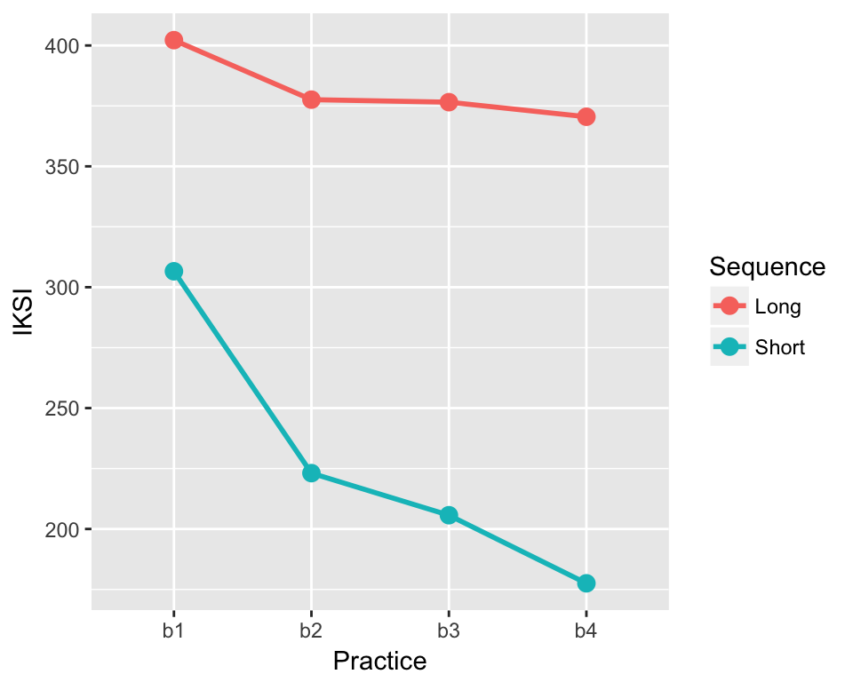
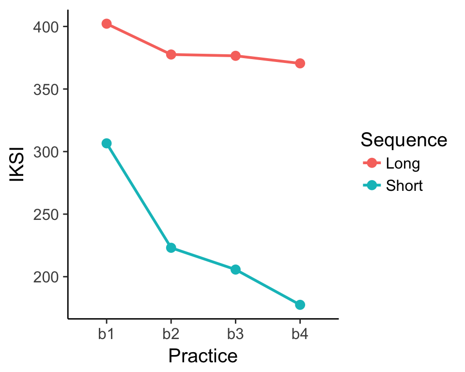
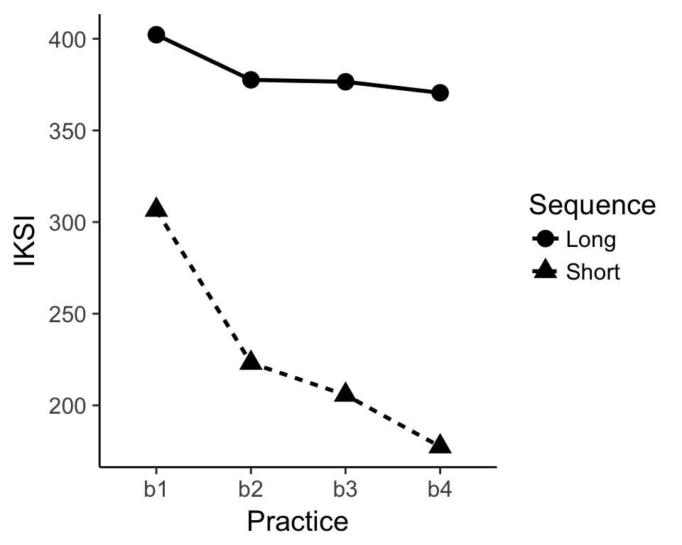
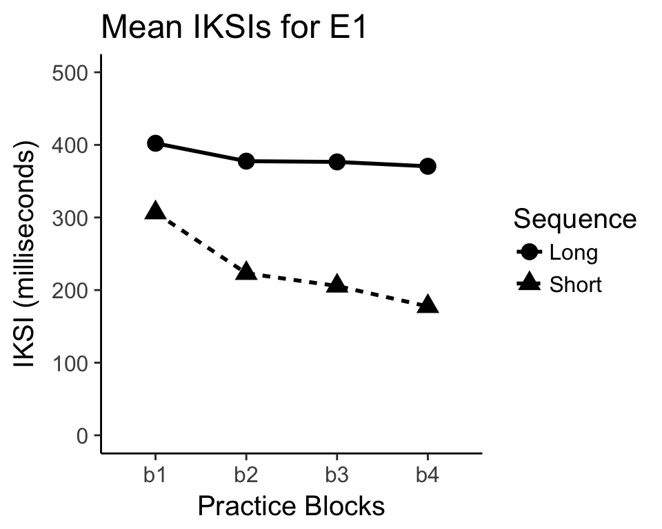
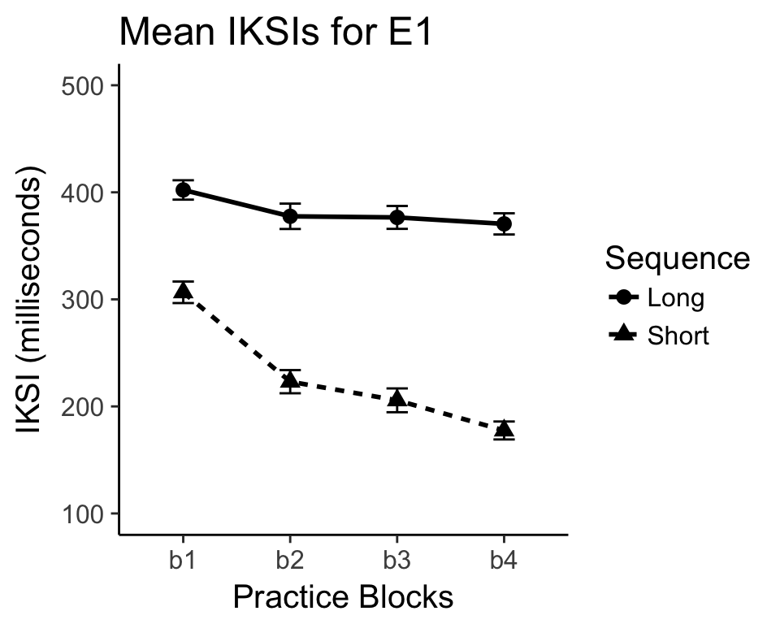

Chapter 6 Visualizing the Data
6.1 Graphing results in R
R can be used to produce graphs for the results of your simulation and other data-analysis. The graphics engine is very powerful, and there are several packages available for producing many different kinds of graphical representations of data. This tutorial will focus on a package called ggplot2.
6.1.1 Install the ggplot2 package
If you are using Rstudio, then you can install the ggplot2 package from the lower right hand window. Click the tab for Packages. Then click Install packages, and type in ggplot2. You should see ggplot2 autocomplete, indicating that Rstudio has found the package. Make sure that “Install Dependencies” is checked, then press install. Wait a few moments, and you will see evidence in the terminal that R installed ggplot2. Next, go back to the packages tab, find ggplot2, and check it to make sure the package is loaded to the memory.
6.1.1.1 Help for ggplot2
As with all things R, there are many useful resources on the web for using ggplot2 to make different kinds of plots. The ggplot2 website is a good resource: http://docs.ggplot2.org/current/
6.2 Simulating, analyzing, and graphing the results from a 2x4 within-subjects design
This example will go through all of the steps from creating a design with specific predictions for performance in each condition, simulating and analyzing the data, producing a graph of the data.
Consider a simple sequence learning experiment. 20 participants are given the opportunity to practice sequences of random strings of letters. There are two within-subjects independent variables. The first is Sequence length, half of the sequences are 5 letters long, and half are 10 letters long. The second is Practice. Participants practice the sequences over 4 blocks of 100 trials each (50 short sequences, 50 long sequences). The dependent variable will be mean inter-keystroke interval (IKSI), which is a measure of the time taken to type each letter in the sequence.
The predictions are that typing speed should increase with practice, and that typing speed should be faster for the short than long sequences. We will also predict an interaction, where the effect of practice is larger for the short than long sequences.
Using the concepts from the previous section we can build the simulated data using the following code. Note that we need to simulate data for 8 different conditions of the DV (it’s a 2x4 design). We could do this on a single line of code, but for clarity we will break up the code.
library(ggplot2)
Subjects<-factor(c(rep(seq(1,20),8)))
S1<-rnorm(20,mean=300,sd=50)
S2<-rnorm(20,mean=230,sd=50)
S3<-rnorm(20,mean=190,sd=50)
S4<-rnorm(20,mean=180,sd=50)
L1<-rnorm(20,mean=400,sd=50)
L2<-rnorm(20,mean=390,sd=50)
L3<-rnorm(20,mean=380,sd=50)
L4<-rnorm(20,mean=370,sd=50)
IKSI<-c(S1,S2,S3,S4,L1,L2,L3,L4)
IKSI[IKSI<0]<-0
Sequence<-c(rep("Short",80),rep("Long",80))
Practice<- rep(c("b1","b2","b3","b4"),2, each=20)
AllData<-data.frame(Subjects,IKSI,Practice,Sequence)Now that we have the data frame constructed, we can run the within-subjects ANOVA, and look at the means for each condition.
ANOVAresults<-aov(IKSI~Practice*Sequence + Error(Subjects/(Practice*Sequence)), AllData)
summary(ANOVAresults)
model.tables(ANOVAresults,"means")The next step is use ggplot2 to graph the results of the simulation. We have a 2x4 design, so we have 8 different means to graph. We have IKSIs for each of the practice blocks for each of the short and long sequences. The goal will be to produce a line graph with two lines indicating the learning curves for the short and long sequences across the practice blocks. We already have the means in each condition from the model.tables code above. However, we will find the means a different way that will work better with the ggplot2 package.
IKSImeans<-aggregate(IKSI~Practice*Sequence, data=AllData, mean)The above uses the aggregate function to create a new dataframe. The aggregate function takes a forumula just like the aov function. The formula says IKSI~Practice*Sequence. In English, this means take all of the observations of the dependent variable IKSI and group them by the independent variables Practice*Sequence. The data=AllData statement points R to the dataframe containing the results to aggregate. The final statement mean, tells R to use the mean function when aggregating the data. If the function was sd instead of mean, then R would use the standard deviation formula. The above line of code should produce a data frame in long format that looks similar to:
IKSImeans## Practice Sequence IKSI
## 1 b1 Long 402.2065
## 2 b2 Long 377.5911
## 3 b3 Long 376.5446
## 4 b4 Long 370.5143
## 5 b1 Short 306.5953
## 6 b2 Short 223.1008
## 7 b3 Short 205.6904
## 8 b4 Short 177.5216You should see what happens when you change the formula to IKSI~Practice, or IKSI~Sequence. The first should produce only the means across the levels of the Practice variable, and the second should produce only the means across the the levels of the Sequence variable. You could also try the formula IKSI~Subjects, and then you would see the mean IKSI for each subject collapsed across the Practice and Sequence length variables.
6.3 Graphing the data using ggplot2
The next step is to use ggplot2 to graph the results of the new dataframe IKSImeans. Entering the following code should produce the line graph. Note that the ggplot2 package needs to be loaded in order for the following to work.
library(ggplot2)ggplot(data=IKSImeans, aes(x=Practice,
y=IKSI,group=Sequence, color=Sequence))+
geom_line(size=1)+
geom_point(size=3)
This is nice looking graph, and shows an example of the standard look and feel of a figure made with ggplot2. The fancy grey background is not standard for figures in Psychological research, and the background can be set to white using an additional statement. For example:
ggplot(data=IKSImeans, aes(x=Practice, y=IKSI,
group=Sequence, color=Sequence))+
geom_line(size=1) +
geom_point(size=3) +
theme_classic(base_size=15) ggplot2 is a very powerful package for visualizing data. The commands for using ggplot2 can appear complex and mysterious. New users of ggplot2 can expect to use trial and error when attempting to change the look and feel of graphs. The next few examples provide a closer look at the syntax for creating graphs in ggplot2, and provide example code for many common options that you might wish to change in your graphs.
6.3.1 The ggplot2 layer metaphor for graphing data
ggplot2 uses layers to build graphs. Imagine starting with a blank canvas as the first layer. The second layer could be to draw and x and y axis. The third layer could be to add lines to the graph. The fourth layer could be to add points to the lines. ggplot2 uses a similar kind of layer system to build graphs by adding new visual elements on top of existing elements. The layering is reflected in the code itself. Let’s look at the code from the previous graph again:
ggplot(data=IKSImeans, aes(x=Practice,
y=IKSI, group=Sequence, color=Sequence))+
geom_line(size=1) +
geom_point(size=3) +
theme_classic(base_size=15)Notice there are 4 lines of code. Each corresponds to a new layer. The first layer is:
ggplot(data=IKSImeans, aes(x=Practice,
y=IKSI, group=Sequence, color=Sequence))+This line calls the function ggplot() and establishes the first layer. The code inside the () set the properties of the first layer. The first statement data=IKSImeans tells ggplot2 to use the dataframe called IKSImeans. The second statement is aes(). Aes is short for aesthetics. The statements inside aes() set up the important dimensions of the graph. The x=Practice statement tells ggplot2 to use the levels of the Practice variable for the x-axis. The y=IKSI statement tells ggplot2 that the y-axis will reflect the range of numbers in the IKSI variable (which holds all of the means). The group=Sequence statement tells ggplot2 that the IKSI means are split by the factor Sequence (remember this codes for the short and long sequences in the example. The color=Sequence statement causes all of the later visual elements representing the means for each level of the Sequence variable to be drawn in different colors. Note that if you type just this one line of code (without the + at the end), ggplot2 will not produce a graph. You need to add more layers.
The second line of code represents the second layer, it adds lines.
geom_line(size=1) +The statement geom_line() is used to add line elements to the graph. It is possible to change the look and feel of the lines that are drawn by editing parameters inside the geom_line() statement. For example, size=1 sets the thickness of the lines. Because the color option has been set in the first line, the lines will automatically be drawn in different colors for each level of the Sequence variable. The syntax for ggplot2 is somewhat flexible so options like color can be placed in different locations. The two examples below produce the same graph. The second example shows that the color option can be set by placing an aes(color=Sequence) statement into the geom_line() statement.
ggplot(data=IKSImeans, aes(x=Practice,
y=IKSI, group=Sequence, color=Sequence))+
geom_line(size=1)ggplot(data=IKSImeans, aes(x=Practice,
y=IKSI, group=Sequence))+
geom_line(size=1, aes(color=Sequence))Three main options for changing line graphs are size, color, and linetype. The size option takes a numeric value. The color and linetype options are usually set to the name of an independent variable. Here is an example that uses all three:
ggplot(data=IKSImeans, aes(x=Practice,
y=IKSI, group=Sequence))+
geom_line(size=1,aes(color=Sequence,linetype=Sequence))The third line of code represents the third layer, it draws points on top of the lines.
geom_point(size=3) +The main options for changing points are size, color, and shape. The size option takes a numeric value. The color, fill, and shape options are usually set to the name of an independent variable. Here is an example that uses all four:
ggplot(data=IKSImeans, aes(x=Practice,
y=IKSI, group=Sequence))+
geom_point(size=3,aes(color=Sequence,shape=Sequence))Note that if you run the above code, you will not produce a graph with lines. This is because a line layer has not been added. To have both you need to combine all of the layers.
ggplot(data=IKSImeans, aes(x=Practice,
y=IKSI, group=Sequence))+
geom_line(size=1,aes(color=Sequence,linetype=Sequence))+
geom_point(size=3,aes(color=Sequence,shape=Sequence))The final line of code in the very first example sets some global properties of the theme of the graph. This removes the grey background, and produces the classic themed graph. Here are all of the four lines again with the new options for lines and points added.
ggplot(data=IKSImeans, aes(x=Practice,
y=IKSI, group=Sequence))+
geom_line(size=1,aes(color=Sequence,linetype=Sequence))+
geom_point(size=3,aes(color=Sequence,shape=Sequence)) +
theme_classic(base_size=15)The option base_size=15 in the theme_classic() statement sets the size of the largest font in the figure.
6.3.2 Changing labels and making a journal-ready figure
There are many considerations that go into making figures. Whether or not you include color in your graph depends on whether the final graph will be used in a publication that produces colored graphs. Many psychology journals do not produce colored graphs, so color can not be used to identify different conditions in your figure. Let’s create a final version of the graph that we have been working on that uses different shapes and linetypes printed in black. The dimensions of shape and linetype will serve to indicate the differences between conditions. We will also add a title the graph, show how to change the labels of the x and y axis, and show how to change the scale of the y-axis.
This makes a black and white graph, with linetype and shape indicating the different levels of the sequence condition.
ggplot(data=IKSImeans, aes(x=Practice,
y=IKSI, group=Sequence))+
geom_line(size=1,aes(linetype=Sequence))+
geom_point(size=4,aes(shape=Sequence)) +
theme_classic(base_size=15)
Let’s add a title, change the x and y-axis labels, and change the scale of the y-axis.
ggplot(data=IKSImeans, aes(x=Practice,
y=IKSI, group=Sequence))+
geom_line(size=1,aes(linetype=Sequence))+
geom_point(size=4,aes(shape=Sequence)) +
ylab("IKSI (milliseconds)") +
xlab("Practice Blocks") +
ggtitle("Mean IKSIs for E1") +
ylim(c(0,500)) +
theme_classic(base_size=15) Now we have an almost journal-ready figure. Often times it is a good idea to add error bars to the figure. In this example, the error-bars will not be informative about patterns of significance because the design is within-subjects. However, it still common to add error bars. The next page covers adding error bars using ggplot2.
6.4 Adding error bars to figures in ggplot2
ggplot2 has a special function called geom_errorbar() that adds error bars to figures. A few extra steps are needed before using the function. Namely, the function needs the range for error bars. This example will show how to calculate standard errors of the mean, and then make error bars based of the standard error of the mean.
Remember the aggregate function used to find the means for each the conditions:
IKSImeans<-aggregate(IKSI~Practice*Sequence,
data=AllData, mean)We can use aggregate function to compute the standard errors of the mean as well. All that needs to be changed is the function from mean, to a function for the standard error. R does not have a built in function for standard error. However, it is easy to write our own.
stde<-function(x) sd(x)/sqrt(length(x))The above code creates the function for the standard error and gives it the name stde. We can now use the stde function inside the aggregate function to produce the standard errors.
IKSIserr<-aggregate(IKSI~Practice*Sequence,
data=AllData, stde)IKSIserr is a new dataframe that lists all of the 8 standard error of the means for each condition. The error bars that we draw will depict one standard error above and below the mean. The next step is to create a single data frame that contains the IVs and the means and standard errors. Let’s call is IKSIall.
IKSIall<-data.frame(IKSImeans,stde=IKSIserr$IKSI)IKSIall should now contain something like the following:
IKSIall## Practice Sequence IKSI stde
## 1 b1 Long 402.2065 9.048281
## 2 b2 Long 377.5911 11.856464
## 3 b3 Long 376.5446 10.691871
## 4 b4 Long 370.5143 9.892417
## 5 b1 Short 306.5953 10.056132
## 6 b2 Short 223.1008 10.824860
## 7 b3 Short 205.6904 11.121012
## 8 b4 Short 177.5216 8.385001As mentioned earlier, ggplot2 uses the geom_errorbar() statement to draw error bars. The statement requires some information about the upper and lower limits of the error bars for each mean. The first step is to create a variable called limits, that holds the minimum and maximum y values for the error bars. The limits variable is created before calling the ggplot2 function. Following the limits statement we can run the ggplot scripts and include the geom_errorbar() statement. Notice that data=IKSIall has been changed because we are pointing to the new data frame with the mean IKSIs and the standard errors (stde) for each of the conditions.
limits <- aes(ymax = IKSI + stde, ymin=IKSI - stde)
ggplot(data=IKSIall, aes(x=Practice,
y=IKSI, group=Sequence))+
geom_line(size=1,aes(linetype=Sequence))+
geom_point(size=3,aes(shape=Sequence)) +
ylab("IKSI (milliseconds)") +
xlab("Practice Blocks") +
ggtitle("Mean IKSIs for E1") +
ylim(c(100,500)) +
geom_errorbar(limits, width=.2) +
theme_classic(base_size=15)